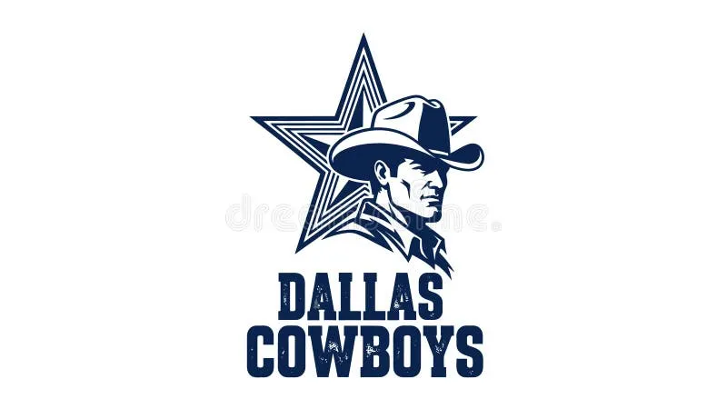
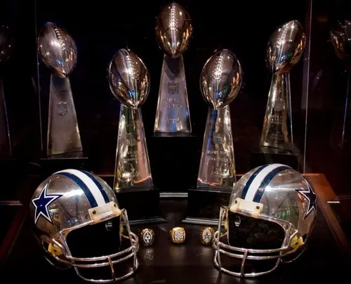
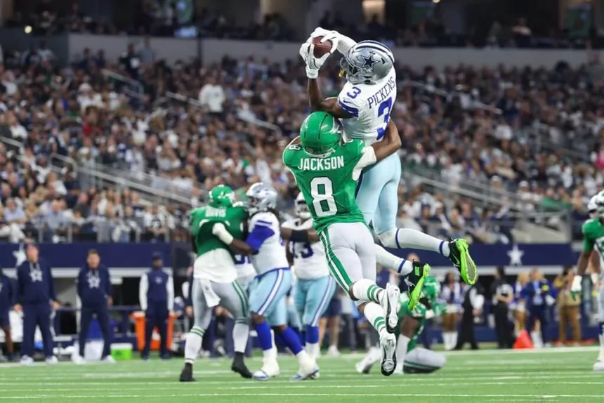
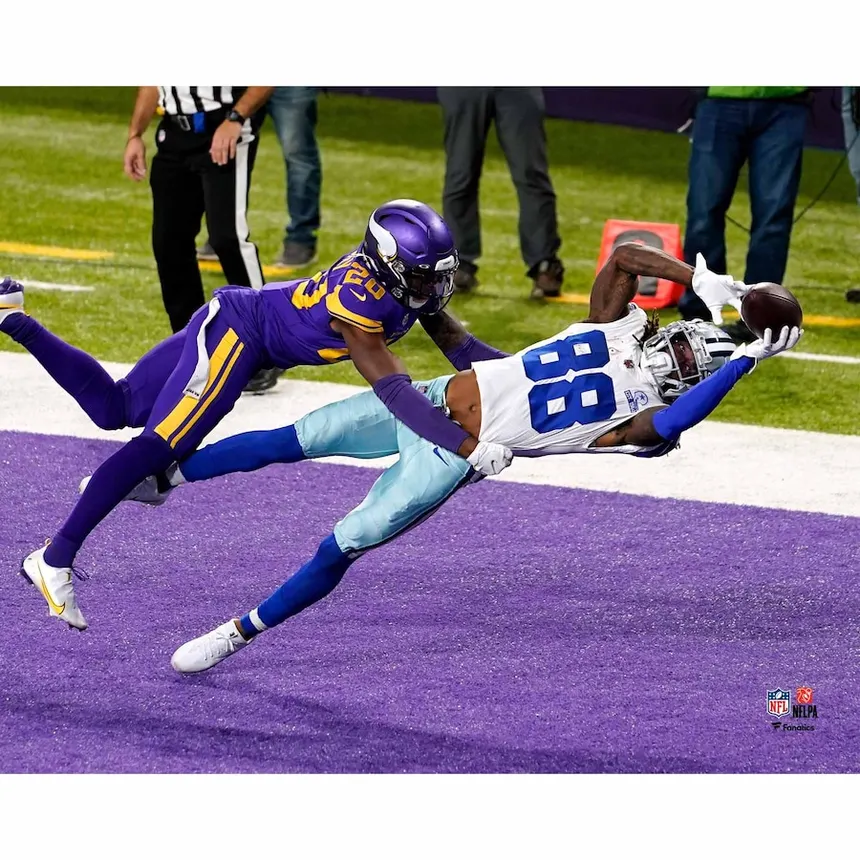
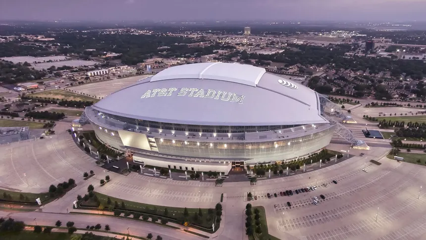
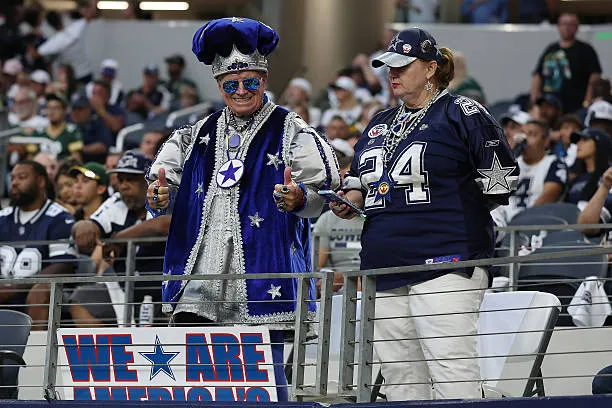

America's Team
Learn about the Dallas Cowboys, one of the most famous and successful teams in NFL history. This website talks about the team's history, championships, players, stadium, and loyal fanbase.

The Dallas Cowboys joined the NFL in 1960 and quickly became one of the most popular football teams in America. The team became known for legendary players, successful seasons, and a large fanbase across the country.

The Cowboys have won five Super Bowl championships and are considered one of the greatest franchises in NFL history. Their success during the 1970s and 1990s helped make the team famous around the world.

The Cowboys have had many talented players throughout their history. The team is known for strong quarterbacks, great defenses, and exciting plays during important games.

Cowboys games are filled with exciting moments and memorable touchdowns. Fans enjoy watching rivalries, close games, and important NFL matchups every season.

AT&T Stadium is located in Arlington, Texas and is home to the Dallas Cowboys. The stadium is known for its large size, modern design, and massive video board.

The Dallas Cowboys have one of the biggest fanbases in sports. Fans support the team all across the United States and are proud to wear Cowboys colors every season.
Dallas Cowboys Website NFL Website ESPN NFL